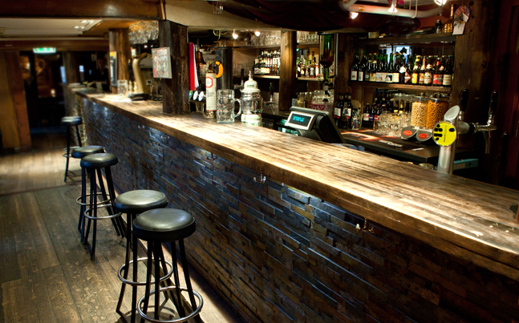

Den Gode Nabo

Den Gode Nabo har siden nittitallet etablert seg som en av Trondheims best besøkte puber. I begynnelsen var Naboen, som den gjerne blir referert til, en bydelspub for beboerne på denne siden av Nidelven; elven som skiller Bakklandet og Møllenberg fra Midtbyen. Men det skulle fort vise seg å bli en populær pub, ikke bare for de i absolutt nærhet, men også for resten av Trondheim. I tillegg viste turistene å sette stor pris på puben vår. Naboen måtte derfor utvides, og i årene som fulgte bygde vi oss innover i brygga så langt det var mulig å komme. Bak hver vegg skjulte det seg små skatter som etter hvert ble hengt opp på vegger og i tak, og som fortsatt henger på Den Gode Nabo.
Oppussing er ett ord som får flisene til å reise seg i treverket på Naboen, om det blir nevnt, men noen utbedringer og moderniseringer har vært nødvendig opp gjennom årenes løp. Gulvet og veggene er sjarmerende skjeve, noe som seg hør og bør i ett gammelt pakkhus, og dette er noe som har fått være som det var. Nettopp dette har bidratt mye til den atmosfæren og stemningen som oppstår en vanlig kveld på Naboen. Det ligger en varm og lun stemning i veggene som smitter over på gjestene og vertskapet. Om sommeren fortøyes en stor flytebrygge - Lekteren, hvor du kan innta iskalde forfriskninger, sjømat og annen god sommermat som tilberedes i samarbeid med Sabor Tapas & Grill. Her kan du nyte utsikten av Lykkens Portal på den ene siden og Nidarosdomen som strekker seg mot himmelen på den andre siden, og vakre Nidelven som stille flyter forbi.
Åpningstider: Søndag - fredag fra kl. 16:00 til 01:30 Lørsdager fra kl. 13:00 - 01:30 post@dengodenabo.com, Tel: 40 61 88 09 Øvre Bakklandet 66, 7014